Uber Map Visualizations
Uber’s teams produce map visualizations for diverse needs across the organization. To ensure consistency and quality, we developed a unified system that guides the creation of high-quality, data-driven maps.
As the lead designer, I translated multiple use cases into a flexible foundation and set of guidelines for map and data visualizations that are scalable across the company. I managed both the micro details—such as color palettes, typography, opacity, and line thickness—and the macro view, ensuring all design elements harmonize to create visually cohesive, intuitive maps that enhance decision-making and user experience.
Behind the Scenes
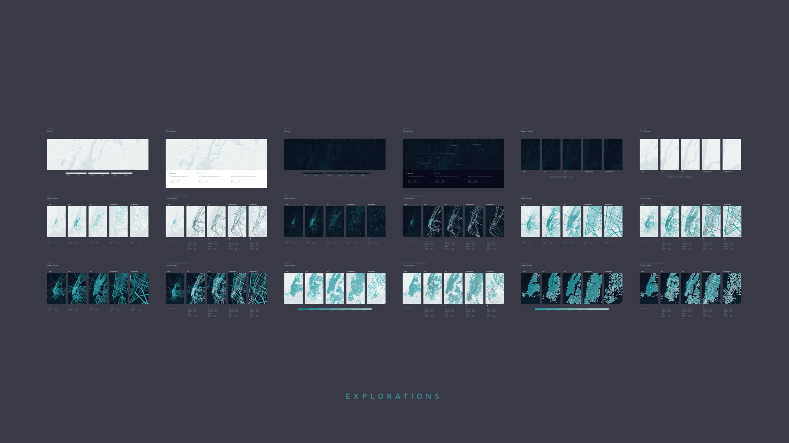
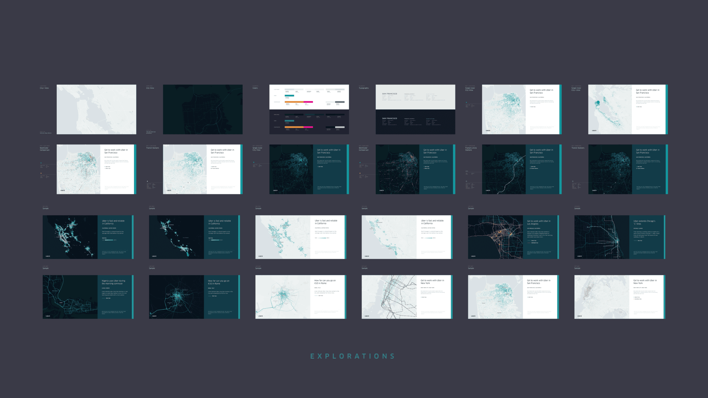
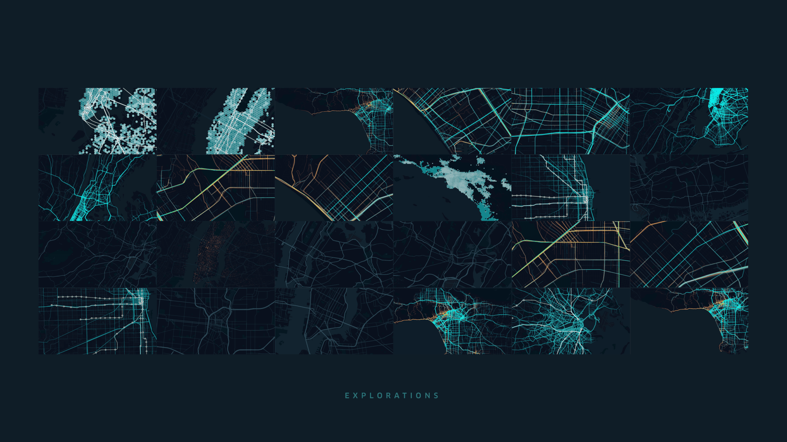
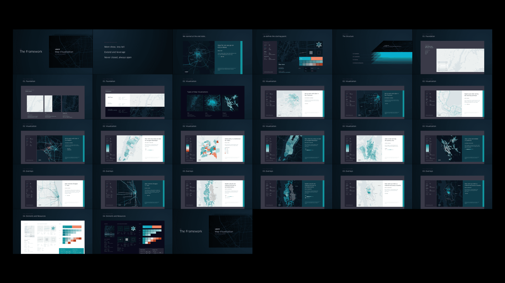
Final Product
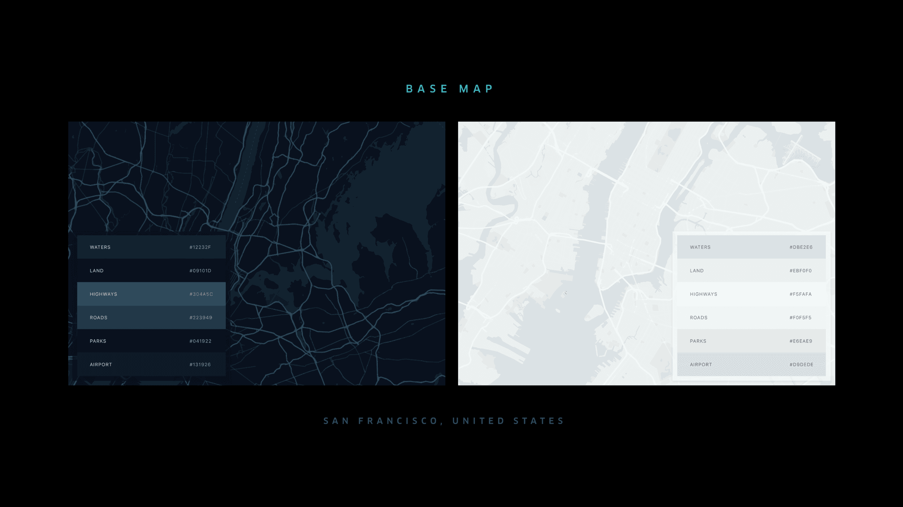
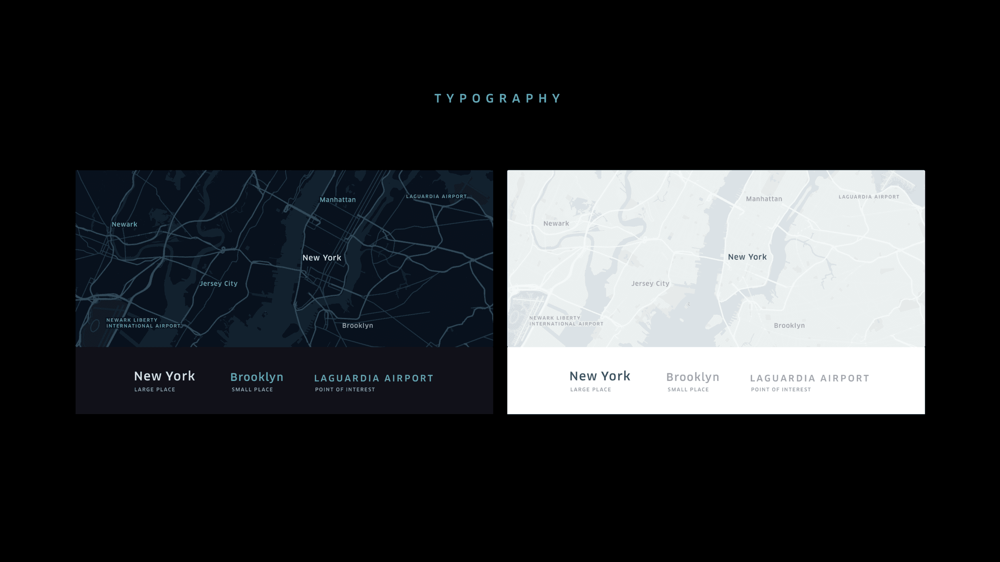
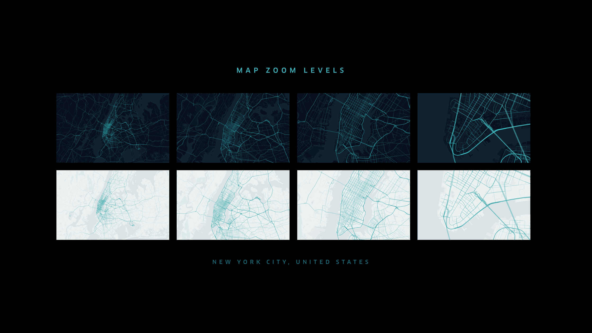
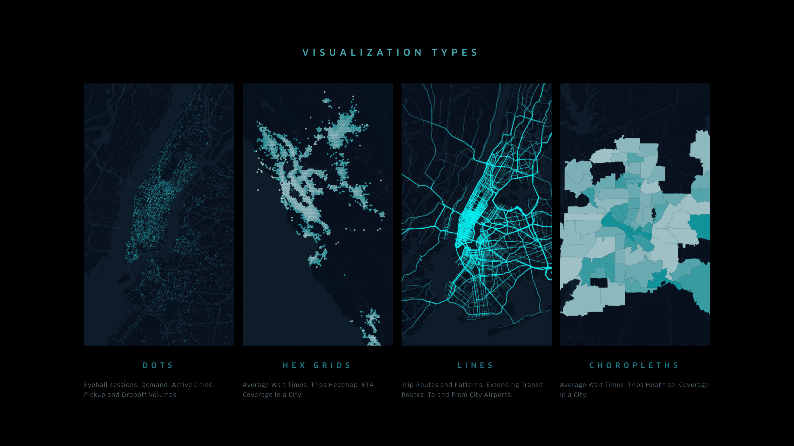
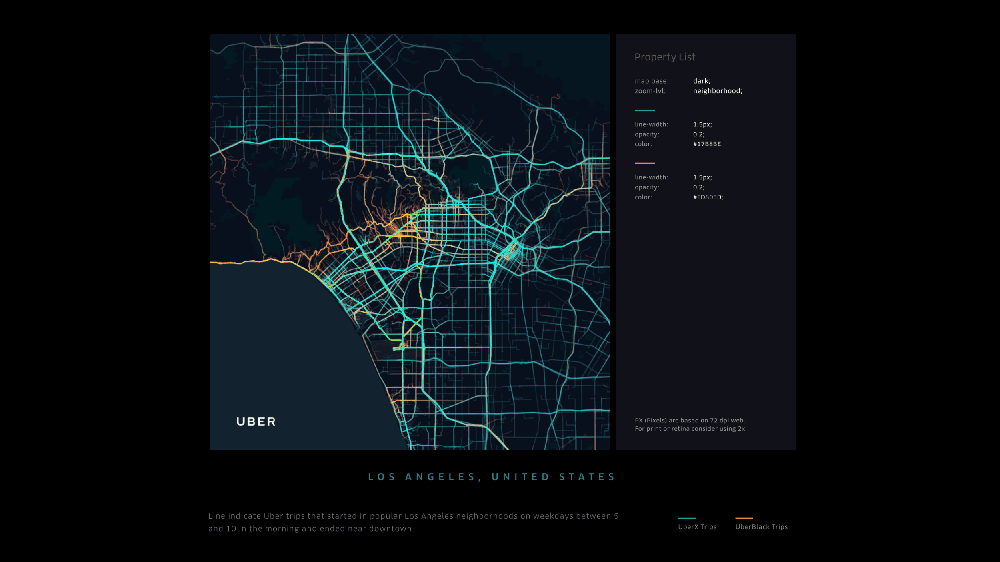
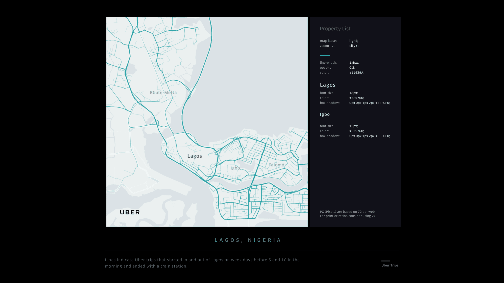
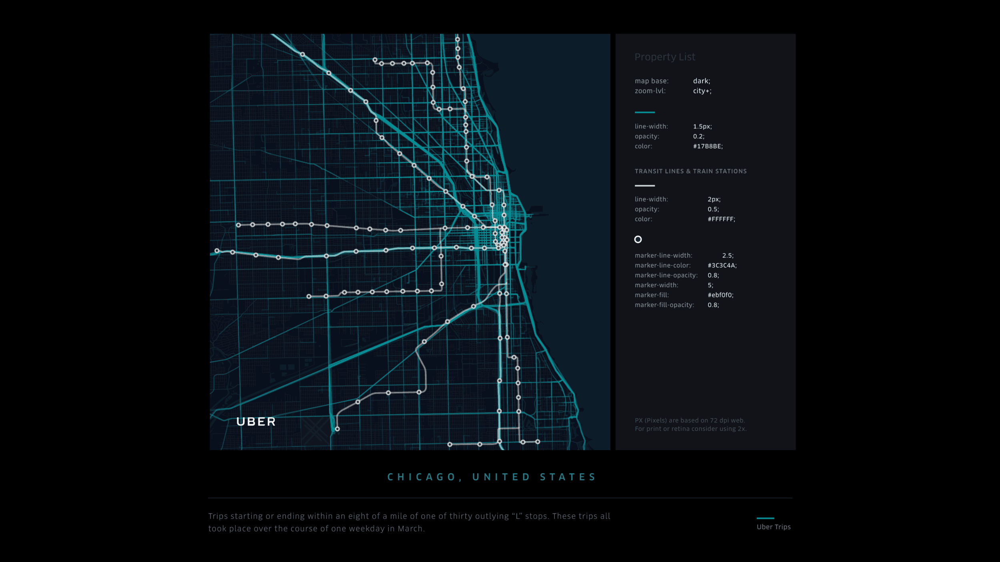
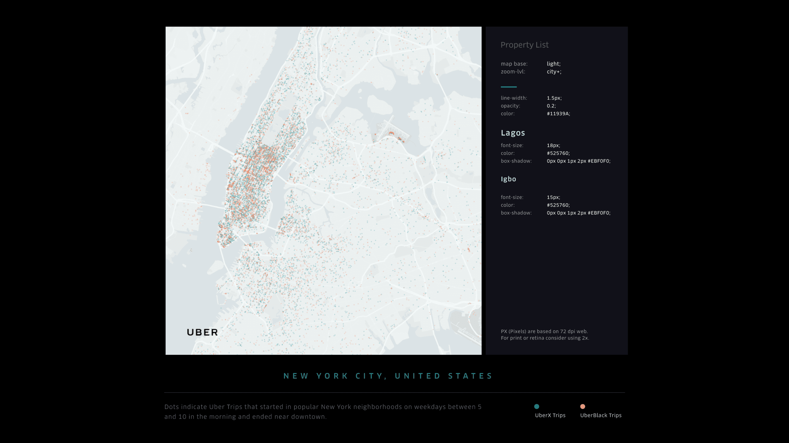
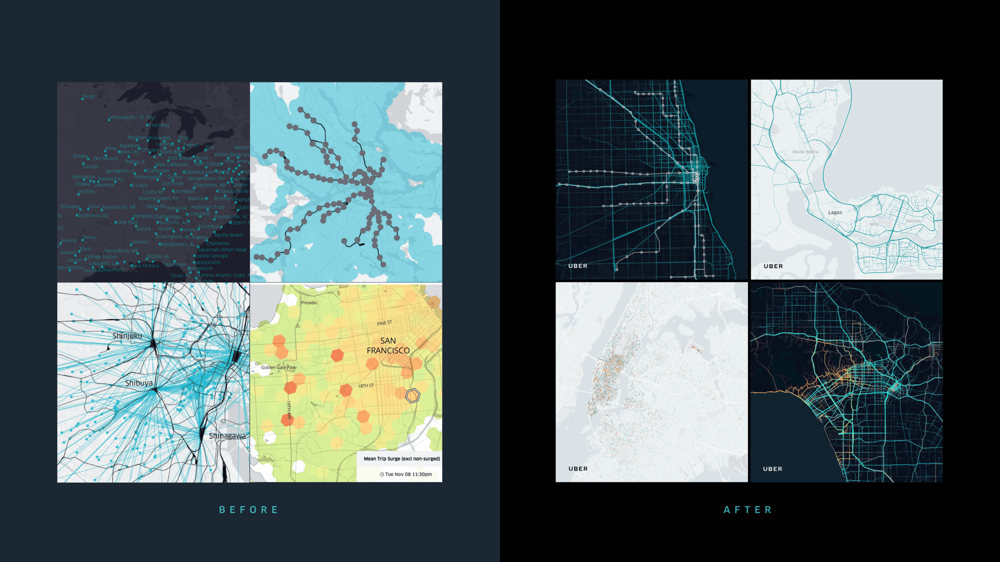
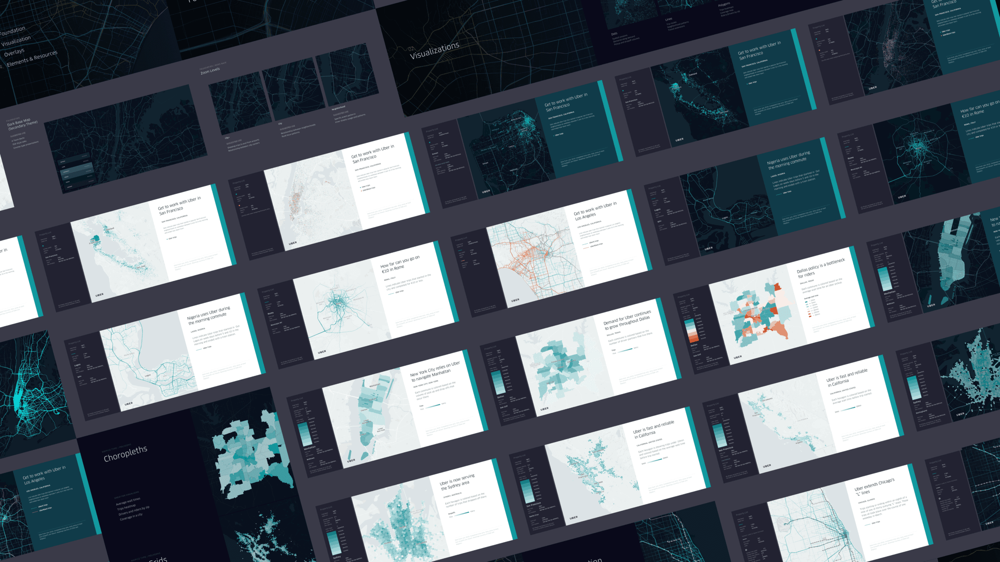
Design Notables
Data Scale
Meticulous fine-tuning enables this foundation to seamlessly handle over 30M+ data points without sacrificing clarity or legibility, ensuring data remains accessible and actionable.
Visual Harmony
Achieving the ideal look for both light and dark modes involved an extensive balancing act. The result? A polished dark mode that enhances data visualizations, particularly impactful in map displays.
High Volume
Hundreds of map designs were developed to drive insight discovery, each crafted for intuitive, immediate understanding, empowering smarter decisions across the board.